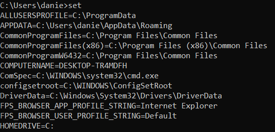

enviroment variables
To access to Windows environment variables we have to refer to them with
%variable_name%esempi:
set
command to see all the environment variables
C:\> set PROCESSOR_ARCHITECTURE
C:\> set path #current logon name, similar to whoami in Linux
C:\> set username #paths where the shell searches in the file system to find the commands that you type in the shell